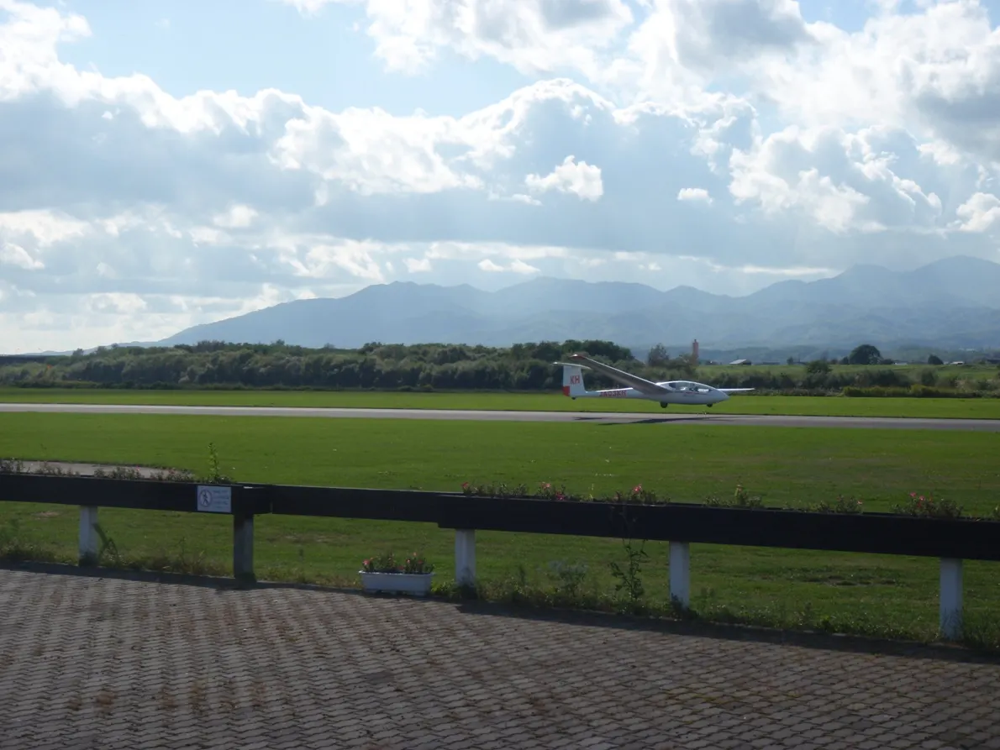
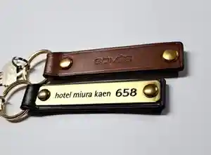
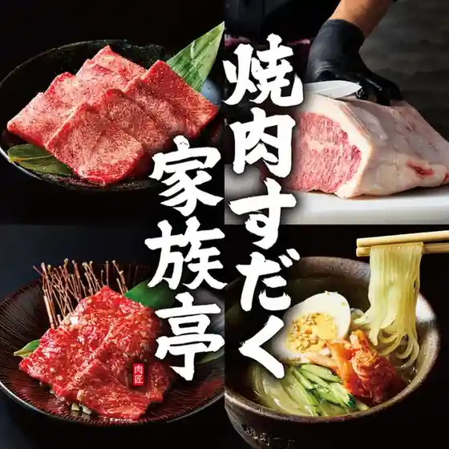
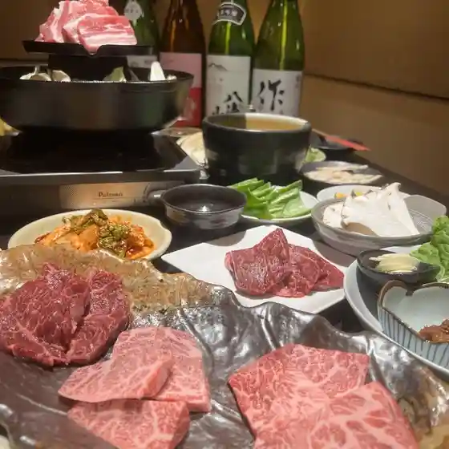
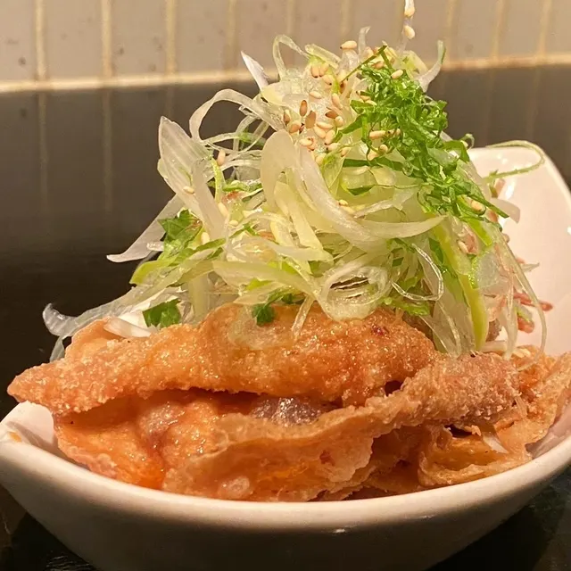
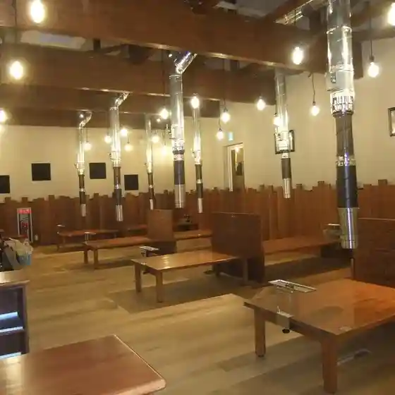
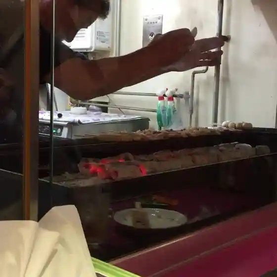
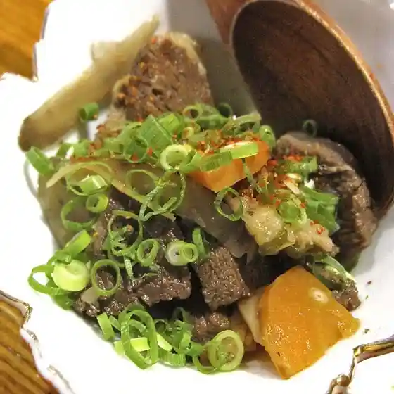
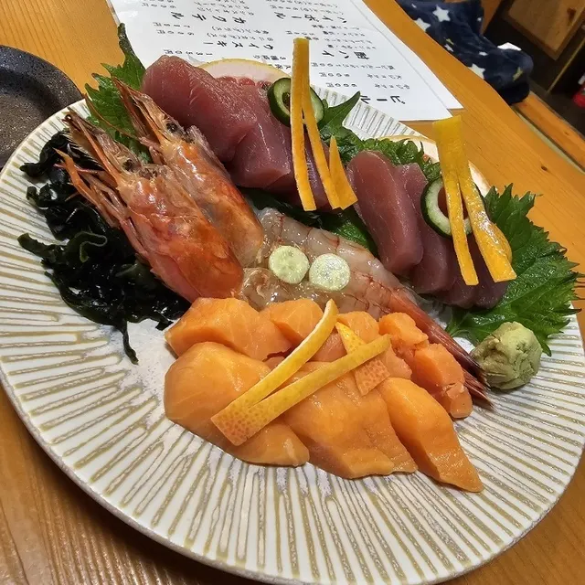

Takikawa
Takikawa · Hokkaido
Takikawa
Highlighted on the Hokkaido map.

Stay
ホテルスエヒロ
Hoterusuehiro
ｈｏｔｅｌ ｍｉｕｒａ ｋａｅｎ（ホテルミウラカエン）

H O T E L M I U R A K A E N ( Hoterumiurakaen )
Dining
いろはにほへと 滝川店

Irohanihoheto Takikawa Mise
焼肉すだく家族亭 滝川店

Yakiniku Sudaku Kazoku Tei Takikawa Mise
焼肉えいちゃん

Yakiniku Eichan
串焼き酒場 立川

Kushiyaki Sakaba Tachikawa
楽しい煉屋

Tanoshii Ren Ya
焼鳥の翁

Yakitori No Okina
日本酒バル 雅

Nihonshu Baru Masa
炭火焼鳥 若

Sumibi Yakitori Jaku
ガスト 滝川店
Gasuto Takikawa Mise
セブンイレブン 滝川栄町1丁目店
Sebun'Irebun Takikawa Sakaemachi 1 Choume Mise
山道名
Yamamichi Mei
精進レストラン ペコの寺
Shoujin Resutoran Peko No Tera
ゆきんこ
Yukinko
磯のにしむら
Iso Nonishimura
ノーザンビーフ 新町店
Noozanbiifu Shinmachi Mise
スラッピーキャット
Surappiikyatto
監獄カラオケミュージックハウス 滝川新町店
Kangoku Karaokemyuujikkuhausu Takikawa Shinmachi Mise
味の店 七福
Aji No Mise Shichi Fuku
高麗苑
Kourai En
寿屋旅館
Hisashi Ya Ryokan
味処にしはら
Ajidokoro Nishihara
野上菓子舗
Nogami Kashi Ho
食事処 一華
Shokuji Tokoro Ichige
きまぐれ茶屋あぶー
Kimagure Chaya Abuu